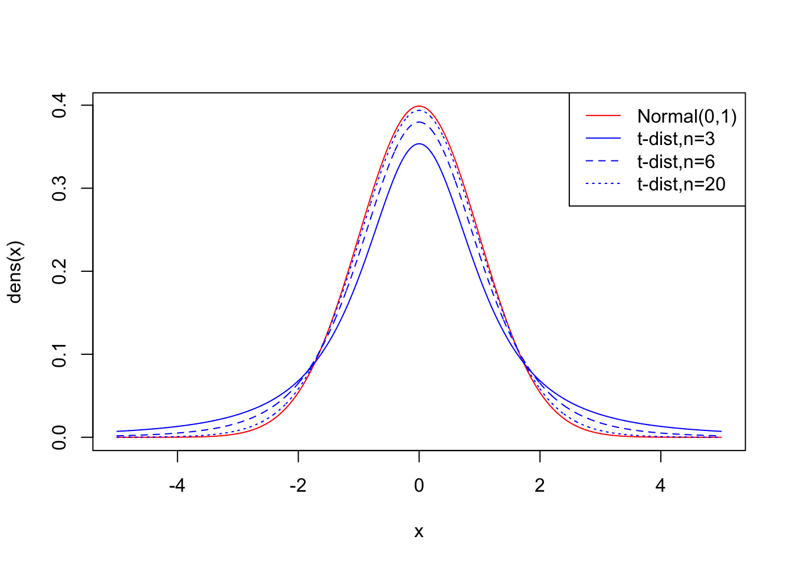
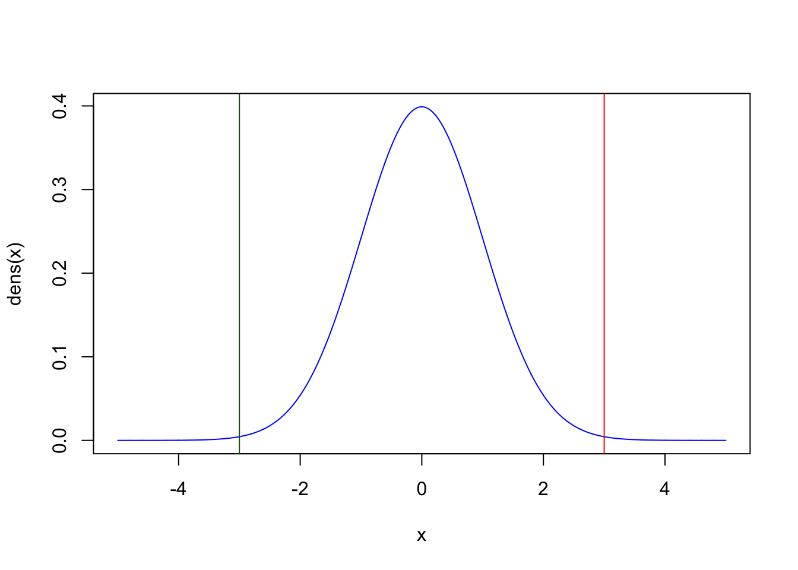

Chapter 7 Properties of Estimators and Hypothesis Testing
7.1 Properties of point estimators
In this exercise, we’ll draw many simulated samples from a known distribution with known parameters. We will then consider these as instances of real datasets, and estimate parameters of the original distributions using different estimators applied to the datasets. Our goal will be to analyze properties of the estimators, namely their sampling distribution, bias and variance.
Recall the definitions of two important properties of point estimators:
Bias: \[B(\hat\theta_n) = E[\hat\theta_n(D) - \theta] \]
The bias reflects the average difference between our estimator and the true parameter.
Variance: \[Var(\hat\theta_n) = E[ (\hat\theta_n(D) - E[\hat\theta_n(D)] )^2] = SE(\hat\theta_n)^2\]
The variance reflects the variation of the estimator’s sampling distribution around its own mean (regardless of what the true parameter is). It is also the square of the standard error.
In real life, we will generally not know the sampling distribution of our test statistic, but we can attempt to approximate it. As we’ll see below, simulations can be of great help here.
We will first create a function that draws a user-specified number (nsim) of independent data samples of size sampsize from a distribution of choice. By default this distribution is the Normal distribution (rnorm), but it can be changed by the user:
simsamps <- function(sampsize, nsim = 10000, rsim = rnorm, ...){
sims <- rsim(sampsize*nsim,...) # generate draws from a specified distribution
simmat <- matrix(sample(sims), nrow=nsim, ncol=sampsize) # organize those draws into a matrix
return(simmat) # provide the matrix as output
}The output of this function is a matrix, with row number equal to the number of generated simulations, and column number equal to the size of each simulation. For example, to create 10,000 simulations, each of size 30, from a normal distribution, we would write:
testmat <- simsamps(30,10000,rnorm) # generate matrix of 10,000 Normal data sets, each of size 30
dim(testmat) # dimensions of matrix## [1] 10000 30What type of Normal distribution are we sampling from though? By default, the function rnorm samples from a standard Normal distribution with mean equal to 0 and standard deviation equal to 1. In our function simsamps, we are only feeding one argument to the normal distribution (the number of draws we want to obtain from it). The three dots placed in both the argument of the simsamps function and in its internal call to rsim allows us to feed more parameters to rsim:
testmat <- simsamps(30,100,rnorm,mean=3,sd=5) # generate matrix of 1000 Normal(3,5) data sets of size 30We can obtain the sample mean and sample median from each of these datasets, using the apply function:
testmean <- apply(testmat,1,mean)
testmedian <- apply(testmat,1,median)Exercise: Create 20,000 simulated data sets of size 100, each drawn from a Normal distribution with expected value equal to 4 and standard deviation equal to 10. Create a histogram of the sample means from all the data sets. Draw a blue line where the average of all these means is located, and a red line where the expected value of the original source distribution is located. Next, do the same for all the sample medians.
Now, try answering these questions: Is the sample mean a biased estimator of the expected value of a normal distribution? Is the sample median a biased estimator of the expected value of a normal distribution? Which estimator has the highest variance? Which estimator would you use if given a dataset like one of the ones we simulated, in order to estimate the expected value of this Normal distribution?
Exercise: Create 20,000 simulated data sets of size 100, each drawn from an Exponential distribution with rate equal to 2. Create a histogram of the sample means from all the data sets. Draw a blue line where the average of all these means is located, and a red line where the expected value of the original source distribution is located. Recall that the expected value of this distribution is 1/rate = 0.5.
Now, try answering these questions: Is the sample mean a biased estimator of the expected value of an exponential distribution? Is the sample median a biased estimator of the expected value of an exponential distribution? Which of these two estimators would you use if you were trying to estimate the rate of an exponential process (e.g. the rate at which buses arrive at a station), from a dataset like one of the ones we just simulated?
The histograms we’ve built reflect the sampling distributions of estimators. They serve to visualize the spread of an estimator’s distribution around its own mean, and allow us to determine whether that estimator’s mean is equal to the expected value of our distribution of interest.
The ‘sampling distribution’ is the distribution of a particular test statistic, like the sample mean or the sample median. This is different from the distribution of the data itself. For example, a data set may come from a particular distribution, say Poisson, Normal or Exponential. The sample mean of such a dataset is a single number. If we had different data sets of equal size, we would be able to obtain different sample means. The distribution of those means (in the limit of infinite datasets) is the sampling distribution, which will often be Normal, if the conditions of the Central Limit Theorem apply. For other statistics, for example, the sample median, the Central Limit Theorem might not apply.
7.2 Obtaining confidence intervals
Confidence intervals (CIs) denote how sure we are about the value of a parameter. Importantly, CIs are statements made about an infinite number of datasets. For example, let’s imagine a parameter of interest called \(\theta\), which has a value that we don’t know. If we had an infinite number of data sets (\(i=1,2,3,...,\infty\)), the lower and upper 95% confidence intervals for each dataset \(i\) are the two values that would bound (contain) the unknown parameter \(\theta\) in 95% of those datasets.
Generally, we only have one set of data points, so this statement might sound a bit confusing. How can we make statements about infinite data sets, when we only have one set? In practice, the confidence interval is an approximation based on the spread (variance) of an estimator’s (\(\hat{\theta}\)) sampling distribution around the expected value of the unknown parameter (\(\theta\)).
If a given estimator \(\hat{\theta}\) of a data set of size n:
- has a known standard error:
\[SE(\hat{\theta}_n) = \sqrt{Var(\hat{\theta}_n)}\]
- is unbiased:
\[E[\hat{\theta}_n - \theta] = 0\]
and
- has a normal sampling distribution:
\[\hat{\theta}_n \sim Normal\]
then the confidence intervals that will contain the true value of the parameter 95% of the time are:
\[(\hat{\theta} + SE(\hat{\theta}_n) q_{2.5\%}, \ \hat{\theta} + SE(\hat{\theta}_n) q_{97.5\%})\] Here, \(q_{x\%}\) is the \(x\%\) quantile function of a standard Normal(0,1) distribution. This value marks a limit such that \(x\%\) of the probability mass of a distribution is to the left (lower than the value), and \(1-x\%\) is to the right (higher than the value).
Because the standard normal(0,1) distribution is symmetric and centered around 0, \(q_{2.5\%} = -q_{97.5\%}\), so we can also write the CI as:
\[(\hat{\theta} - SE(\hat{\theta}_n) q_{97.5\%}, \ \hat{\theta} + SE(\hat{\theta}_n) q_{97.5\%})\]
If we compute these boundaries for a particular data set we study, and the estimator we’re applying satisfies the 3 conditions above, we can be sure that these boundaries will contain the true parameter \(95\%\) of the time (out of an infinite number of possible data sets that we could have obtained, in theory, from the phenomenon of interest).
Note that the sampling distribution of the mean will tend to be normal and unbiased for large sample sizes, because of the Central Limit Theorem! However, the sampling distribution of other statistics (like the median) may be neither normal nor unbiased. For example, as we saw in the previous section, the sampling distribution of the median of a data set that is exponentially distributed is biased! Thus, it would be inappropriate to compute the 95% CIs using the equation above in that case. Later on in this class, we’ll figure out ways to obtain more general CIs that do not depend on the strict assumptions of unbiasedness and normality of the estimator’s sampling distribution.
The mean of a normally distributed dataset is both unbiased and normally distributed, so the stated assumptions hold in that case. Let’s verify that:
Exercise: Create 20,000 simulated data sets of size 5, each drawn from a Normal distribution with expected value equal to 4 and standard deviation equal to 10. For each dataset, compute the sample mean. Then, compute the standard error of the mean (standard deviation over all means). Finally, use the standard error to compute the \(95\%\) confidence intervals for each data set, using the formula stated above. How often do these confidence intervals contain the expected value? Hint: to obtain the quantiles of a Normal distribution, you can use the function qnorm. For example, the \(35\%\) quantile of a standard Normal(0,1) distribution is equal to qnorm(0.35,mean=0,sd=1).
Here, because we are using simulations, we can obtain the standard error of the mean by generating many data sets. Recall that the standard error of the mean is equal to a scaled version of the standard deviation:
\[SE(\hat{\theta}_n) = \frac{\sqrt{\sigma^2}}{\sqrt{n}}\]
In practice, when working with a single data set, the estimator’s standard error \(SE(\hat{\theta}_n)\) is generally unknown. However, it can be approximated using the sample standard deviation \(s\) of the dataset we are studying:
\[SE(\hat{\theta}_n) \approx \frac{s}{\sqrt{n}}\] Thus, we can obtain CIs by replacing \(SE(\hat{\theta}_n)\) above with \(s/\sqrt{n}\):
\[(\hat{\theta} + \frac{s}{\sqrt{n}}q_{2.5\%}, \hat{\theta} + \frac{s}{\sqrt{n}}q_{97.5\%})\]
Exercise: Repeat the exercise above, but instead of using the standard error, approximate this value by using the standard deviation (\(s\)) of each data set (via the function sd()). Plug that standard deviation into the formula above for obtaining confidence intervals. How often do these confidence intervals contain the expected value? Repeat this exercise multiple times. Is the proportion of bounded means as accurate as in the previous exercise?
As you’ve probably noticed, this will lead to overly confident boundaries, because we’ve replaced the standard error with a rough approximation to it. To correct for this, we must replace the quantiles of the Normal distribution with the quantiles of a distribution with slightly bigger tails: a ‘more uncertain’ distribution, called the t-distribution. This serves to correct for the extra uncertainty that we are bringing in by using our sample’s standard deviation \(s\) instead of the true \(SE(\hat{\theta}_n)\) of the sampling distribution:

The t-distribution has a single parameter (called the ‘degrees of freedom’), and represents how much information we have about the shape of the sampling distribution. In our case, this parameter should be set to \(n-1\) where \(n\) is the size of our data set. The larger our dataset, the bigger this parameter, and the closer the t-distribution will become to a Normal distribution.
Thus, to compute the \(95\%\) confidence intervals when working with a real data set with a normally distributed estimator, we can use this formula:
\[(\hat{\theta} + \frac{s}{\sqrt{n}}t_{2.5\%}, \hat{\theta} + \frac{s}{\sqrt{n}}t_{97.5\%})\] where \(t_{x\%}\) is the \(x\%\) quantile function of the t-distribution with \(n-1\) degrees of freedom.
Exercise: Repeat the exercise above, but instead of using the standard normal(0,1) quantiles, use the quantiles from a t-distribution with \(n-1\) degrees of freedom, where \(n\) is the size of each data set. Hint: You can obtain the quantile of a t-distribution using the function qt(). For example, the \(30\%\) quantile of a t-distribution with 4 degrees of freedom is equal to qt(0.3,4).
This is a useful formula, as the sampling distribution of the sample mean of large data sets (large \(n\)) will tend to be normal and unbiased due to the Central Limit Theorem. Thus, we can readily use this formula whenever we’ve obtained a large dataset and have calculated its sample mean and standard deviation!
A good rule of thumb is to use the above formula to compute CIs using the sample mean \(\bar{X}\) as the estimator \(\hat{\theta}\) if:
The data points \(X_1, X_2, ..., X_n\) of your data set are known to come from a Normal distribution, so \(\bar{X}\) is guaranteed to be Normally distributed, OR…
The data points \(X_1, X_2, ..., X_n\) of your data set might not come from a Normal distribution, but \(n\) is large enough that the Central Limit Theorem kicks in, and so \(\bar{X}\) is approximately Normal (generally around 30 data points).
If these assumptions don’t hold, you might need to use other methods, like permutation and resampling, which we’ll cover in later lectures.
7.3 Hypothesis testing
We often need to use the sampling distribution of an estimator \(\hat{\theta}\) to determine whether the value of the estimator is “far enough” from a given value \(\theta_0\) to reject the hypothesis that the true expected value is equal to \(\theta_0\). How “far enough” the estimator needs to be from \(\theta_0\) - the null hypothesis - will depend on how wide the sampling distribution is.
If we’re dealing with unbiased, normally distributed estimators - like the sample mean when \(n\) is large - then under the hypothesis that the true expected value \(\theta = \theta_0\):
\[\hat{\theta} \sim Normal(\theta_0, Var(\hat{\theta}))\] In other words,
\[\hat{\theta} - \theta_0 \sim Normal(0, Var(\hat{\theta}))\] If we move the variance to the other side, we obtain:
\[\frac{\hat{\theta} - \theta_0}{\sqrt{Var(\hat{\theta})}} \sim Normal(0, 1)\] Recalling that the standard error (SE) is equal to the square root of the variance of the estimator, we can also re-write the above formula as:
\[\frac{\hat{\theta} - \theta_0}{SE(\hat{\theta})} \sim Normal(0, 1)\]
For example, in the plot below, we show a \(Normal(0,1)\) distribution, and an observed value of the difference \(\hat{\theta}-\theta_0\). If the magnitude of this difference is far enough from zero, then we can reject the hypothesis that \(\hat{\theta} = \theta_0\). We need to define an arbitrary cutoff for what “far enough” means. This cutoff is traditionally set such that values as extreme or more extreme than the one observed have a probability less than \(5\%\) (in other words, P-value < 0.05), but this cutoff is just a tradition.
We also need to be aware that we often don’t know whether the true expected value of our distribution is a priori lower or higher than the value stated by our null hypothesis. In that case, we need to look at the two tails of the sampling distribution, e.g. the probability mass to the left of the green line and to the right of the red line in the plot below:

Annoyingly, to determine the “width” of the sampling distribution of the estimator, we need its standard error. If our test statistic is the sample mean and we have a large dataset (generally \(n>30\)), then can again re-use the Central Limit Theorem, which states the standard error of the sample mean is equal to the standard deviation scaled by the square root of the sample size:
\[SE(\hat{\theta}) = \sqrt{\sigma^2}/\sqrt{n}\] Thus:
\[\frac{\hat{\theta} - \theta_0}{\sqrt{\sigma^2/n}} \sim Normal(0, 1)\]
This standardized version of the sample mean is called a z-score and follows a standard normal distribution. However, the standard deviation in the denominator (\(\sqrt{\sigma^2}\)) is generally unavailable because we would only be able to know this with certainty if we knew the parameters of the distribution from which our data comes from. Instead, just as we did when computing confidence intervals, \(\sqrt{\sigma^2}\) can be replaced by the standard deviation of the data set at hand (s), scaled by the square root of the sample size:
\[SE(\hat{\theta}) \approx s/\sqrt{n}\]
When this happens, we can no longer say that our test statistic follows a Normal distribution: the use of the sample standard deviation as a “stand-in” for the true standard deviation causes the sampling distribution of our test statistic to become wider. Our new test-statistic - called a t-statistic - now follows a new distribution called the t-distribution with \(n-1\) degrees of freedom:
\[\frac{\hat{\theta} - \theta_0}{s/\sqrt{n}} \sim t_{n-1}\]
The t-distribution is a handy distribution when performing hypothesis testing, particularly because it arises whenever we use the standard deviation of the data as a replacement for the standard error.
The t-statistic is an example of a ‘pivot statistic’: like other statistics, it can be a function of observations, but its key feature is that its probability distribution does not depend on unknown parameters. You can be sure that the distribution of a t-statistic will always be the t-distribution with n-1 degrees of freedom, even if we don’t know the true standard deviation of the sampling distribution of \(\hat{\theta}\).
As before, a good rule of thumb is to use the above formula for performing hypothesis testing using the sample mean \(\bar{X}\) as the estimator \(\hat{\theta}\) if:
The data points \(X_1, X_2, ..., X_n\) of your data set are known to come from a Normal distribution, so \(\bar{X}\) is guaranteed to be Normally distributed, OR…
The data points \(X_1, X_2, ..., X_n\) of your data set might not come from a Normal distribution, but \(n\) is large enough that the Central Limit Theorem kicks in, and so \(\bar{X}\) is approximately Normal (generally around 30 data points).
Exercise: Create a single simulated data set of size 50, where each data point is drawn from a Normal distribution with expected value equal to 4 and standard deviation equal to 10. Let’s pretend like you don’t know the expected value from which you’re simulating. Using a P-value cutoff of \(5\%\), can you reject the null hypothesis that the expected value is equal to 5? The test will need to be two.sided as we don’t know whether we expect the true expected value to be larger than or smaller than 5 a priori.
Hint: you can do this in two ways, which should yield exactly the same P-values:
computing a t-statistic and then using twice the CDF of a t-distribution with ‘n-1’ degrees of freedom, to obtain the symmetric 2-tailed P-values:
2*pt(), or…using the handy function
t.test(). You’ll need to set the optionxto be equal to your vector of data points, and the optionmuto the particular hypothesis value you might want to test.
Exercise: Repeat the above exercise, but this time simulate a data set of size 500 instead. Using a P-value cutoff of \(5\%\), can you now reject the null hypothesis that the expected value is equal to 5?
This exercise illustrates that the ability to reject a null hypothesis does not only depend on the difference between a statistic and its null expectation, but also in the amount of data we have, i.e. the power we have to reject the hypothesis.
You might notice lots of similarities between the computation of confidence intervals and the testing of a hypothesis: same assumptions, same approximations, same use of the Normal distribution. Under the “frequentist” school of statistical thought, hypothesis testing and confidence interval estimation are indeed intimately related: they are two sides of the same coin!